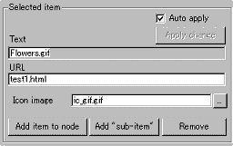
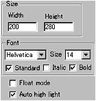
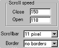
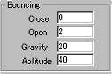
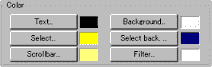

|
This applet provides a Explorer style menu tree
with good functionality. This may be one of the most useful applet
in real world.
[For more technical
information about the available parameters, click here.]
Most parameters are self-explanatory and you can
always see brief description of each parameter by moving the mouse
pointer over the wizard.
 |
Before start editing the menu, you should
plan the structure of the menu for your site carefully. Creating
the site structure on Anfy wizard is simple. Add and remove
items with item names and associated URL and text.
Since the ver 1.4, the tree items can be named
with non-English fonts. To achieve this, you need to select
your desired character set at the "character set"
parameter box.
|
 |
In the example shown left, Japanese
(Shift-JIS) is selected. Then, appropriate code will be added
in the final document within a <meta> tag. |
We currently provide the following list of character
sets, but if you manually edit <meta> tag, you should be able
to use others too.
|
Arabic (ISO) iso-8859-6
Arabic (Windows) windows-1256
Baltic (ISO) iso-8859-4
Baltic (Windows) windows-1257
Chinese (Traditional) big5
Chinese (Simplified) gb2312
Chinese (Simplified HZ) hz-gb-2312
Cyrillic (ISO) iso-8859-5
Cyrillic (Windows) windows-1251
European (Central, ISO) iso-8859-2
European (Central, Windows) windows-1250
European (Western, ISO) <-- default iso-8859-1
Greek (ISO) iso-8859-7
Greek (Windows) windows-1253
Hebrew (ISO) iso-8859-8
Hebrew (Windows) windows-1255
Japanese (Shift-JIS) x-sjis
Japanese (JIS) iso-2022-jp
Japanese (EUC) x-euc-jp
Korean (ISO) iso-2022-kr
Korean (euc-kr) euc-kr
Latin 3 (ISO) iso-8859-3
Thai (ISO) iso-8859-11
Thai (Windows) windows-874
Turkish (ISO) iso-8859-9
Turkish (Windows) windows-1254
Ukrainian (KOI8-RU) koi8-ru
Vietnamese (Windows) windows-1258
|
Those who use non-English (non-Latin) fonts should
know how to handle non-Latin fonts in HTML. For example, you add
in the <head></head> tag,
<meta http-equiv="content-type"
content="text/html; charset=iso-8859-1">
if Latin fonts are used. However, in the case of
Latin fonts, most people tend to use default character set and may
not explicitly state this. The wizard automatically outputs this
tag for you!
|
Before start editing the menu, you should
plan the structure of the menu for your site carefully.
Creating the site structure on Anfy wizard is simple.
Add and remove items with item names and associated
URL and text.
Since the ver 1.4, the tree items can
be named with non-English fonts. To achieve this, you
need to select your desired character set at the "character
set" parameter box.
|
|
In the example shown left,
Japanese (Shift-JIS) is selected. Then, appropriate code
will be added in the final document within a <meta>
tag. |
|
We currently provide the following list
of character sets, but if you manually edit <meta>
tag, you should be able to use others too.
|
Arabic (ISO) iso-8859-6
Arabic (Windows) windows-1256
Baltic (ISO) iso-8859-4
Baltic (Windows) windows-1257
Chinese (Traditional) big5
Chinese (Simplified) gb2312
Chinese (Simplified HZ) hz-gb-2312
Cyrillic (ISO) iso-8859-5
Cyrillic (Windows) windows-1251
European (Central, ISO) iso-8859-2
European (Central, Windows) windows-1250
European (Western, ISO) <-- default iso-8859-1
Greek (ISO) iso-8859-7
Greek (Windows) windows-1253
Hebrew (ISO) iso-8859-8
Hebrew (Windows) windows-1255
Japanese (Shift-JIS) x-sjis
Japanese (JIS) iso-2022-jp
Japanese (EUC) x-euc-jp
Korean (ISO) iso-2022-kr
Korean (euc-kr) euc-kr
Latin 3 (ISO) iso-8859-3
Thai (ISO) iso-8859-11
Thai (Windows) windows-874
Turkish (ISO) iso-8859-9
Turkish (Windows) windows-1254
Ukrainian (KOI8-RU) koi8-ru
Vietnamese (Windows) windows-1258
|
Those who use non-English (non-Latin)
fonts should know how to handle non-Latin fonts in HTML.
For example, you add in the <head></head>
tag,
<meta http-equiv="content-type"
content="text/html; charset=iso-8859-1">
if Latin fonts are used. However, in
the case of Latin fonts, most people tend to use default
character set and may not explicitly state this. The
wizard automatically outputs this tag for you!
|
|
 |
Unlike other menu
applets, you can't specify a unique frame for each link in the
tree menu. |
|
Instead, you can open all linked pages in your selected frame.
This is achieved by skip two menu pages and find the regcode
menu.
Whenever you make changes to the menu tree,
you need to click "Apply change" button,
unless you have checked "Auto apply" box.
|
 |
Next, decide the applet size and the
background image. Then select a text font, and font size.
Fonts can be italic or bold faced. By default, you select
one font from Courier, Helvetica, Dialog, Times Roman. These
are standard fonts and even if you want to type in non-Latin
letters, such as Japanese, Greek and Hebrew, these four fonts
can be used.
|
This is achieved by automatically, so you don't
really have to set non standard fonts in any circumstances, however,
by unchecking "standard" box, you are allowed to
select one from all the available system fonts.
Note.
Using non-standard font causes unexpected results
in other people's system. When you do thits, you must know what
you are doing.
"Auto high light" lets the text
highlighted when a mouse pointer is over it.
If you would like the menu to appear in a small
new window, check "Float mode" box.
 |
Now you set the speeds of opening
and closing tree nodes at "Open" and "Close".
If you add quite many items, a current applet height may not
provide enough space to display all items. |
If this is the case, a scroll bar appears at the
right side of the applet like Windows scroll bar. You can decides
the width of this scroll bar at "Scrollbar" parameter.
You can even add a border line around the applet
with your selected value for the "Border" parameter.
 |
Next, you set bouncing
of tree items when they are mouse-selected with one click. |
Items show damped oscillation when they are opened
or closed. Bouncing "Close" and "Open"
represent the numbers of bounce when an item is either being closed
or opened. With "Gravity" parameter, ranging 0
to 100 you control how explicitly items bounce, while "Amplitude"
parameter decides the maximum amplitude of the bounce. Since, this
is a damped oscillator, the maximum amplitude is the initial amplitude.
 |
Then, set colours for
texts, scrollbar, background, etc. |
"Text" colour is the item text
colour displayed as default. Once you select an item, "Selected"
item colour replaces the default colour for the item. "Scrollbar"
colour is the colour for the scrollbar and the border of the applet
area.
"Background" colour and "Selected
Background" colour respectively represent the default colour
for the background and the colour replaced the default one when
an item is mouse-selected.
"Filter" colour is somewhat different
from other colour settings. This colour is used to filter all icon
images to decide which will be shown as transparent. If you use
provided icons, you should not change the default transparent colour,
white.
Note that if you load transparent gif images as
icons, be sure to set appropriate transparent colour.
Floating mode
If you have selected floating menu mode, a new configurator
appears when you click "Next" button. (See below.)
When you activate this mode, the applet size itself can be as small
as 1 pixel, but MUST NOT be zero so as to embed the applet to your
HTML document.

Set the floating window size (Width, Height) and
give the initial position when a window first appears. You can set
the name of the window. If you would like to see the menu window
always appear on top of other windows, check "Always on top
box", otherwise leave it unchecked.
Proceed to the expert menu.
|